Reading and Editing
The reader in LemmaLoom is the center pane in the main window that contains the text of your document. It is where you read your documents, conduct searches within the texts, select words and passages for coding or annotation, and edit the text itself. If the document was imported as an audio or video file, the reader displays the transcript along with the player bar above it so that you may hear the recording alongside reading the transcript.
The examples mentioned in this chapter relate to the sample “Climate Debate” project (see The example project in Chapter 1, Introduction); most examples use its op-eds and columns, such as “Running Out of Time” or “Net Zero Will Cost You”, whereas examples related to recordings employ the document “Radio Debate”. You may load the sample project for yourself using File ▸ Import ▸ Example Project; LemmaLoom imports it as a new project in the interface’s language.
The reader
Clicking a document in the navigation sidebar opens it in a tab in the reader, which contains the same components for every document. These components consist of:
- The title band lies above the text column at the height where the window buttons reside. Title bands contain the LemmaLoom title to the far left and the reader’s tools at the far right.
- The text column makes up the bulk of the reader, where all the text resides. Lines stop at a comfortable reading width.
- Located to the left of the text column, the gutter numbers paragraphs and sentences and displays all your annotations. These include any codings (passages you have coded), memos, bookmarks, and links. Each annotated element has its corresponding symbol displayed in the gutter.
- Located at the extreme right side of the reader, the document overview provides you with an overall picture of where everything lies in the document relative to the current view.
- Located beneath the text column, the status bar gives you your position within the document, as well as the total length of the document.
The search bar, a legend for most enabled lenses, and the player for audio and video can also appear between the title band and the text.
As seen in the figure below, a skeptical opinion piece from “Climate Debate” titled “Net Zero Will Cost You” includes mostly codings associated with the code “Costs”. A few passages carry other codes, such as “Uncertainty”, “Responsibility”, “Urgency”, or “Deadlines”. One sentence, about a bill that “runs into the hundreds of billions”, carries both “Costs” and “Responsibility”, so a combined annotation with two dots stands beside it in the gutter.
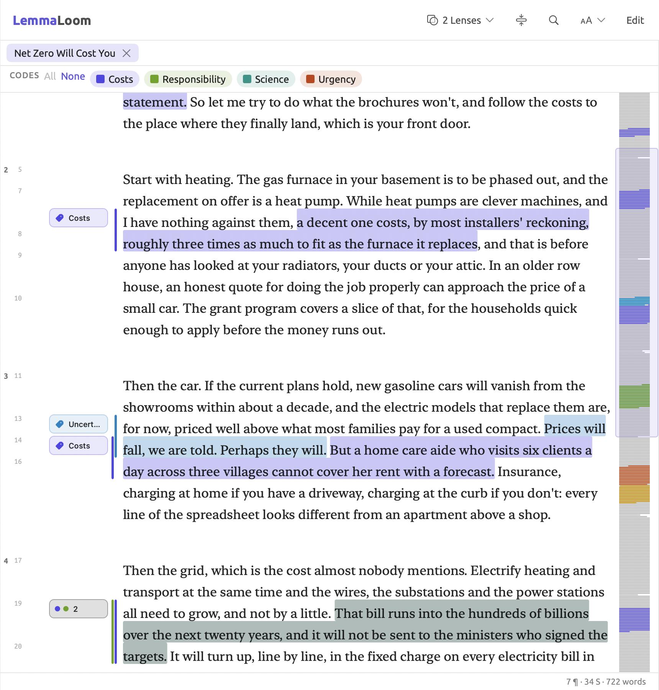
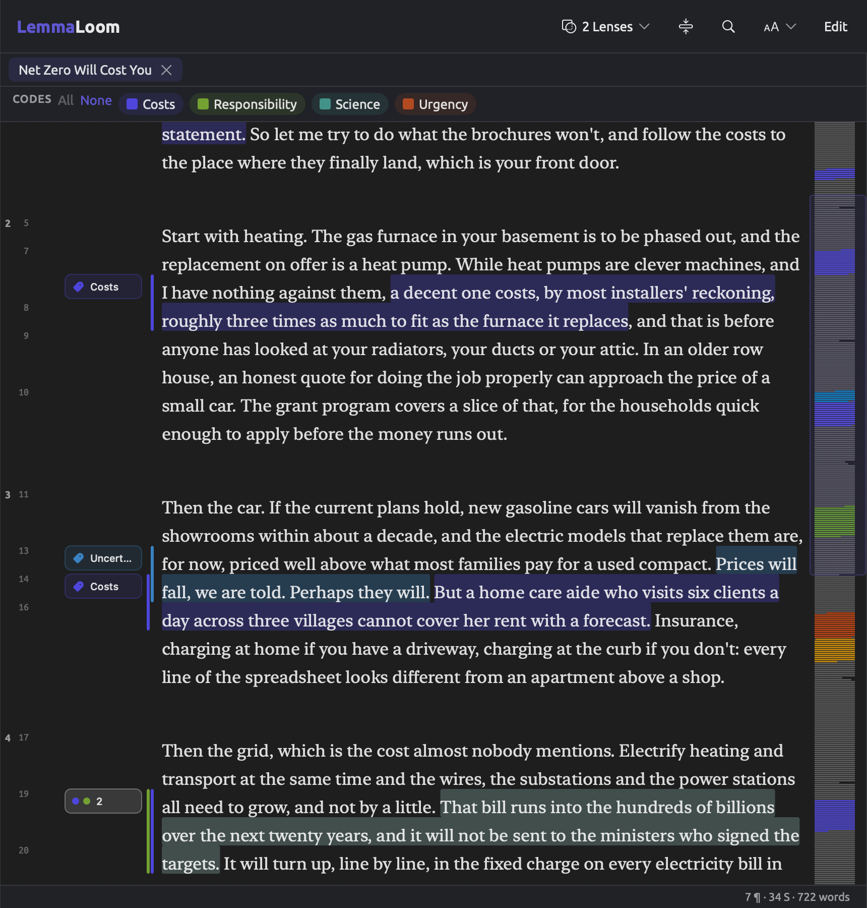
The title band
The buttons on the right-hand end of the title band apply to the document currently being viewed. When two documents are opened side by side, these buttons apply to the currently active pane, the last one clicked (see Reading two documents side by side further ahead in this chapter). From left to right, here is what these buttons mean:
- The lens menu displays either the currently enabled lens’s name or how many lenses are enabled at once when several are, or Lens when none is. A newly opened document comes equipped with Bookmarks and Codes lenses enabled, resulting in 2 Lenses in the menu. This menu is disabled until the document has been indexed.
- Collapse, which displays the tooltip Show only the sentences a lens annotates, collapses the entire document down to the sentences annotated by the currently enabled lenses. Clicking this button again will undo the collapse effect. This button appears only when a lens has something to annotate (see Chapter 6, Lenses).
- Find in document, represented by the magnifying glass icon, displays the search bar.
- Font, gutter, and text size, represented by a big A next to a small one, brings up a menu of options related to the appearance of the document.
- Edit switches the reader to editing mode.
During editing mode, the title band buttons are limited to Cancel and Save.
The gutter
The gutter has two main sections. On the extreme left side are the numbers, where paragraphs are numbered in the left column and sentences in the right column. Sentences are numbered continuously through the whole document. Where multiple sentences start in the same line, their numbers share that line, separated by commas, as many as fit in the column.
To select a whole paragraph or sentence, click on its corresponding number in the gutter. If both columns are visible at once, clicks in the left column select paragraphs, whereas clicks in the right column select sentences. Once a passage is selected, you may treat it like other selections, including coding it. In fact, clicking a number is the fastest way of coding a whole paragraph or sentence (see Selecting text later in this chapter).
Between the numbers and the text is the margin, in which all additions to the document show. Codings display here when the Codes lens is enabled; bookmarks likewise show when Bookmarks is enabled. All memos and links display regardless of the current lens.
- Coded passages show with a small bar next to them, colored with their respective code colors. Where overlapping codings occur, they line up side by side. Any bars beyond the third share the third slot. Hovering the mouse pointer over a bar highlights the corresponding passage in the text.
- Each coding, memo, bookmark, and link has a small annotation where it begins. Coding annotations contain code names; memo annotations show the beginnings of each memo. Bookmark annotations show comments associated with the bookmark, whereas link annotations indicate link types.
- Where annotations might overlap one another, all overlapping annotations compress into one gray annotation, accompanied by colored circles and a count.
By clicking the annotation or bar itself, you select the passage the element corresponds to. Instead, clicking a link annotation navigates to the passage linked to on the opposite end of the link, opening the other document if needed. In the “Climate Debate” project, for example, the link on a passage in the op-ed piece “Net Zero Will Cost You” takes one directly to the speech it addresses, “A Mayor’s Promise”. Hovering the mouse pointer over an annotation shows a memo, a link, or a long bookmark comment in full; a link’s popover shows the link information along with Go to the other end. Pointing at or clicking a combined annotation shows all its entries in a list, and clicking an entry selects its passage or, for a link, goes to the other end.

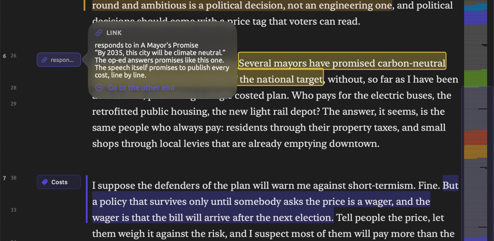
The document overview
The document overview, found along the right side of the reader, is a scroll bar that is color-coded according to the enabled lenses. It tells you where in the document you currently are and what portions of your document the enabled lenses annotate, such as codes. Everything contained within your document fits within the confines of the document overview panel. The actual text appears as faint lines running from top to bottom, with breaks where the paragraph divisions lie. Short paragraphs containing entirely capital letters denote heading-like text and appear as darker strokes. Coded sections and the words your lenses color show in their respective colors.
Here are a few additional features of the document overview:
- your current viewing location in the document is marked by an outlined rectangle;
- your bookmarks appear as little square symbols on the far left side;
- search matches appear as small tick marks on the far right side;
- the selected word appears as a line across the document overview panel.
When hovering the mouse pointer over sections in the document overview, you get previews of the text in that area, namely the paragraph under the mouse pointer, with its number, and the four paragraphs before and after it. You can either click to jump to that paragraph in the text (which highlights momentarily), or you can drag up and down the document overview to move through your text document.
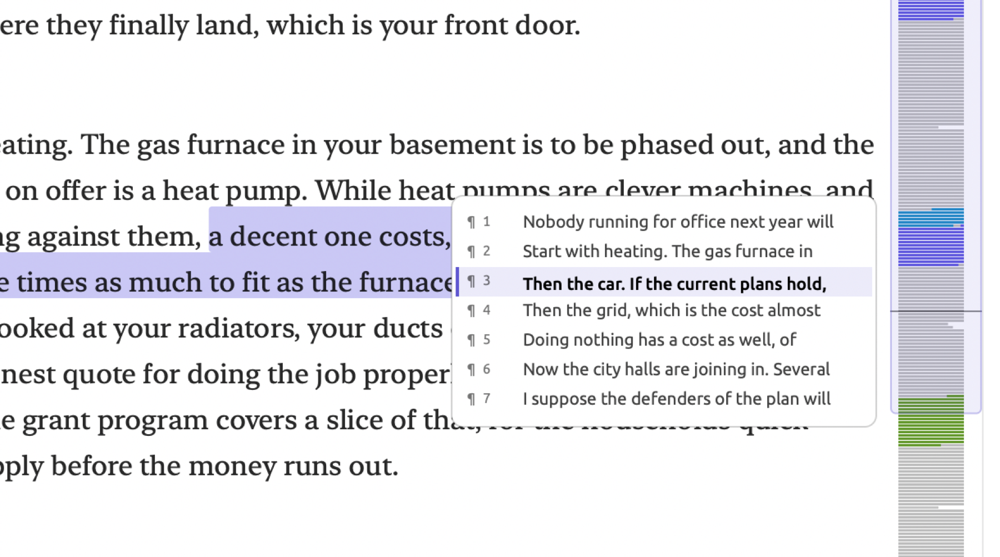
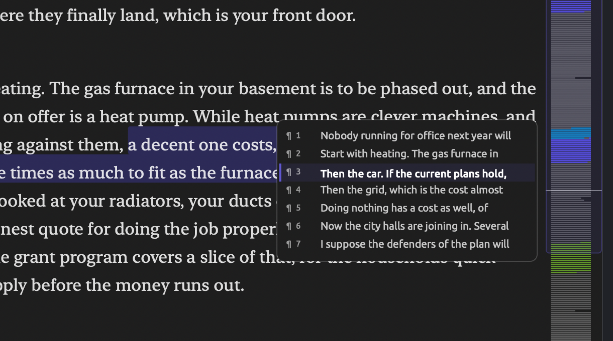
The status bar
The left end of the status bar tells you the location of the currently selected item. When selecting a word, the status bar displays the paragraph and sentence it belongs to, along with its token order in the sentence (e.g., ¶ 4 · S 22 · T 6 refers to the fourth paragraph, twenty-second sentence, and sixth token). A token is one word or punctuation mark. Selecting passages results in their starting and ending paragraph and sentence locations being displayed, along with their total number of tokens.
When indexing has completed, the right end gives you statistical information about your document in a concise format, for example, 10 ¶ · 65 S · 1,029 words for “Running Out of Time”. Word counts are based on tokens (that is, punctuation included); which counts appear depends on your gutter numbering. Setting your gutter to Paragraphs will give you counts of paragraphs and words; Sentences, sentences and words; and Off only words.
Until indexing has finished, or when it cannot run, the document’s current indexing status will appear in place of the stats (see In the reader in Chapter 21, Analysis and Indexing).
These statuses include:
- Name of the stage and a percentage indicator during the initial indexing pass;
- Running and a name of the active analyzer during the running of an analyzer pass (extra processing of a specific feature, such as ties between sentences);
- No grammar analysis for, followed by the language name of a language that does not undergo grammar analysis;
- Indexing is off with an Index Now link for indexing turned off during importation by unchecking Index for grammar analysis;
- The reason and a Retry Indexing link when indexing encounters an issue.
Before indexing has finished
The document becomes readable immediately upon opening. However, several functions in the reader remain inactive until the indexing of the document is completed:
- Gutters contain paragraph numbers alone, since sentences are found during indexing;
- You select a passage in the document manually by clicking and dragging;
- The lens menu is disabled;
- The status bar displays indexing progress rather than any statistics.
Indexing duration will depend both on the size of the document and the specifications of your computer. Grammar analysis in LemmaLoom supports English, German, and Chinese languages. Documents in other languages stay as described above but retain the ability to be read, searched, coded, and edited.
What the reader retains
Each document retains memory of where you left off reading, what lenses were on, and the inspector state. Projects retain knowledge of tabs opened, the currently active tab, and which document has been opened side by side with split view. LemmaLoom keeps all this when you quit, so the reader opens where you left it.
Changing how text is presented
The settings you can configure include your choice of font family, text size, the content of gutters, and text layout. Your chosen settings will be saved globally across all documents in all projects until you change them.
There are three places from which you may customize these options:
- The Font, gutter, and text size menu in the title band, which includes submenus Font, Gutter, and Layout, along with Larger Text, Smaller Text, and Reset Text Size options;
- The View menu, which affects the text size setting only;
- LemmaLoom ▸ Settings… (⌘,), in its Reader pane, which also configures the display of selections and shows a preview.
If you need to revert your choices, and the display of selections, back to their default state as when you first launched LemmaLoom, select Reset All to Defaults from atop the Reader pane.
Font
The reader includes eleven font options including System Serif, System Sans, System Rounded, System Mono, Georgia, Palatino, Baskerville, Times New Roman, Helvetica Neue, Avenir Next, and Menlo. Everything displays using System Serif until changed. All Chinese text uses whatever Chinese font Macs use by default, regardless of the font you choose.
To switch between fonts, click Font, gutter, and text size in the title band, then select one under Font. From Settings, it’s available in the Typography section’s Font row.
Text size
Text sizes are available in increments of 10% from 70% to 200%. The default size at 100% is 17 points.
- You can incrementally adjust your text sizes one step at a time using View ▸ Larger Text (⌘+) and View ▸ Smaller Text (⌘-).
- If you need to restore your text to its default size, you can use View ▸ Reset Text Size (⌘0).
- Alternatively, in Settings, you can use the Text Size slider under Typography. The percentage appears beside it, and the reset button next to that returns you to 100%.
The text column’s width adjusts accordingly to keep the average number of words per line consistent, and the text editor (referenced later in this chapter under Editing a document’s text) maintains the same settings.
Gutter numbering
The Gutter submenu, named Gutter Numbering under Settings, selects the numbering scheme used in the gutters:
| Setting | The gutter shows |
|---|---|
| Both | paragraph and sentence numbers (the setting you start with) |
| Paragraphs | paragraph numbers only |
| Sentences | sentence numbers only |
| Off | no numbers |
If you use paragraphs alone as the passage reference, you’ll notice that Paragraphs helps keep the gutter less busy. Even with Off, however, the margin shows annotations such as codings, memos, bookmarks, and links.
Layout
The Layout submenu, under Page in Settings, contains two different layouts, Single Column and Two-Page Spread.
By default, documents are displayed using Single Column. Text is presented in a single column with the gutter adjacent to it.
Documents in Two-Page Spread have their text laid out across pages, appearing two pages at once like an open book. Each page is as tall as the reader, and you scroll down from one pair of pages to the next. Each page displays paragraph and sentence numbering, similar to the Single Column layout, while the document overview functions similarly as well. Resizing the window dynamically flows the text onto new pages. A Two-Page Spread layout suits larger screens and initial readings of lengthy documents prior to coding.
Whenever you switch between layouts, your current location within the document remains saved.
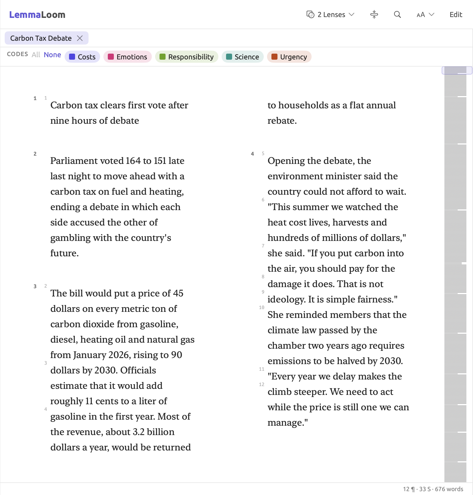
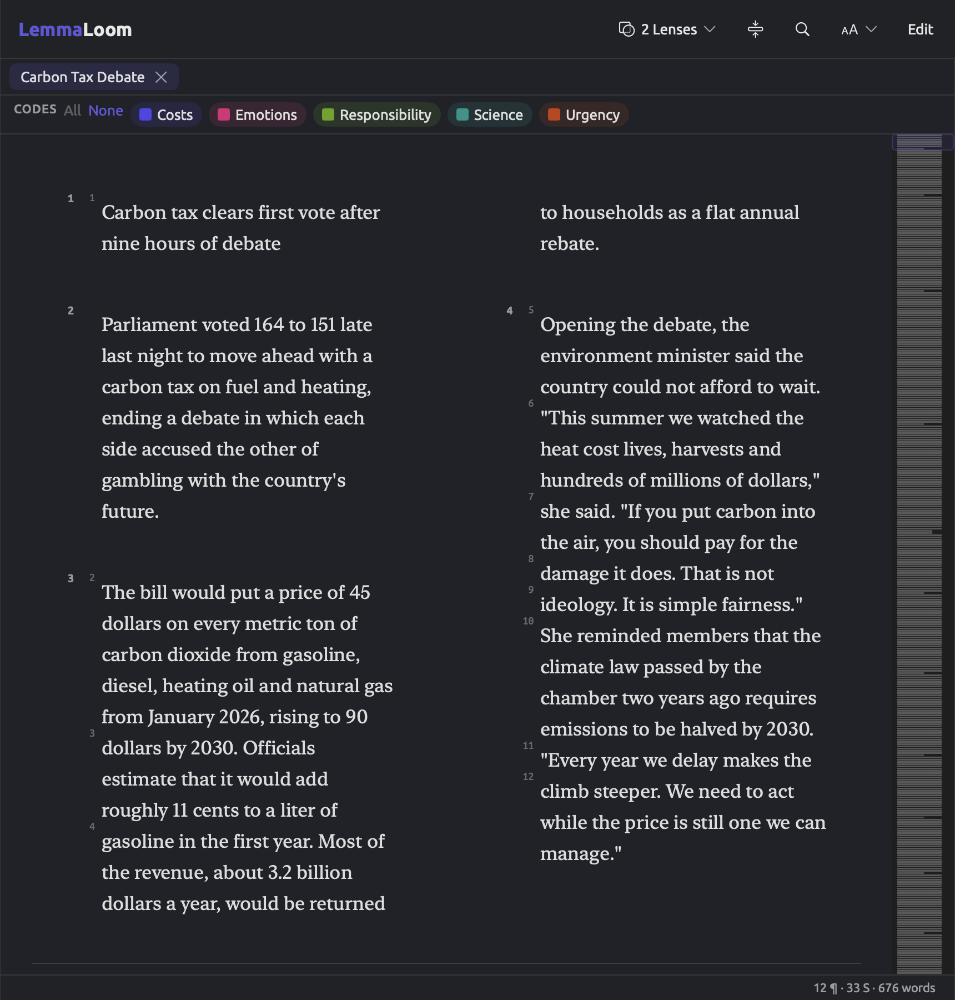
Reader colors
The appearance of the reader, including text color and background, comes from the theme chosen for the whole application. You may choose a theme with the Theme setting under Appearance in the General pane of Settings. If you need help understanding themes, visit Chapter 24, Settings and Appearance. The effect of choosing a theme for the reader includes the following:
| Theme | Reader |
|---|---|
| System, Protanopia, Deuteranopia, Tritanopia | follows the light or dark appearance of macOS |
| Light, High Contrast | dark text on white |
| Dark, High Contrast Dark | light text on a dark background |
| Cream | dark brown text on warm off-white paper |
| Solarized Light | gray-blue text on pale cream |
| Solarized Dark | pale gray text on deep blue-green |
How selections are displayed
The selected word or passage, and a word’s grammatical relations, appear in the text when you select them. Their look is determined by your Settings within the Selection section of the Reader pane. There is a preview at the bottom of the pane where you can check what the end result looks like based on changes to the rows.
| Row | Choices | What it controls |
|---|---|---|
| Selected Text | Solid block, Highlight | A rounded block in the text color with the selected words in the background color, or a light tint behind them. |
| Head and Dependents | Arcs, Lines, Labels, Highlight, Off | How the reader shows which word the selected word depends on (its head) and which words depend on it (its dependents). |
| Surrounding Text | Fade, Light fade, Highlight sentence, Off | Whether the rest of the text dims around the selection, or the selected word’s sentence is tinted. |
| Audio Playback | Spotlight, Solid block, Highlight | How the passage being played is rendered when the reader follows the recording (see Following the transcript later in this chapter). |
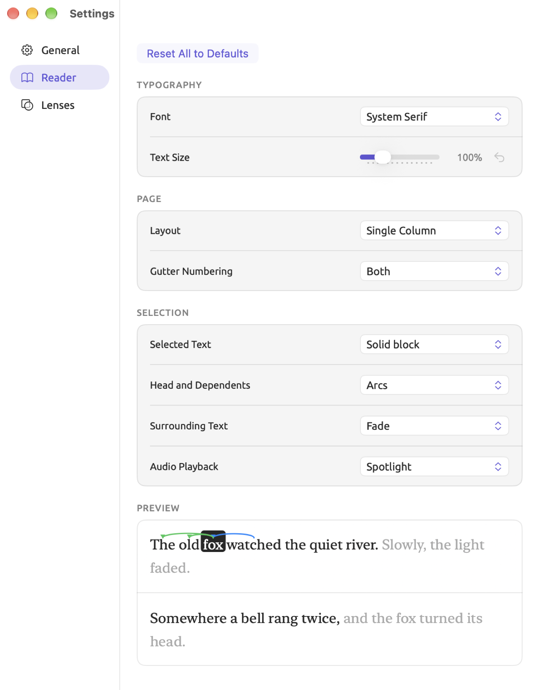
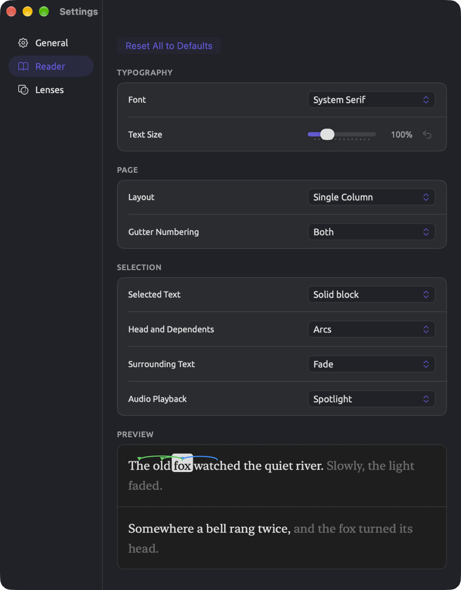
For each row, the option selected as default will be the first option.
In linguistics, the head of a word is what it modifies or depends on. For instance, in the example a national program to insulate homes, national modifies or describes program, making program the head, and national is one of its dependents.
Fade lets you maintain focus on your sentence. When you’d rather be able to keep your context clearly visible during the coding process, you can pick Light fade or Highlight sentence.
Finding text
The search bar lets you search your currently opened document for the characters you are typing, bringing you directly to the matched passages. If you need to match all word forms, e.g., pay and paid, or search multiple documents simultaneously, you should use a query rather than the search bar. Queries incorporate consideration of word forms and grammatical context (see Chapter 15, Building a Query).
The figure shows the column “The Models Keep Missing”, written by a skeptic author who once “built models for a living”. When searching for model with the search bar, LemmaLoom returns twelve matching results, including models and modelers, and the document overview shows how they spread.
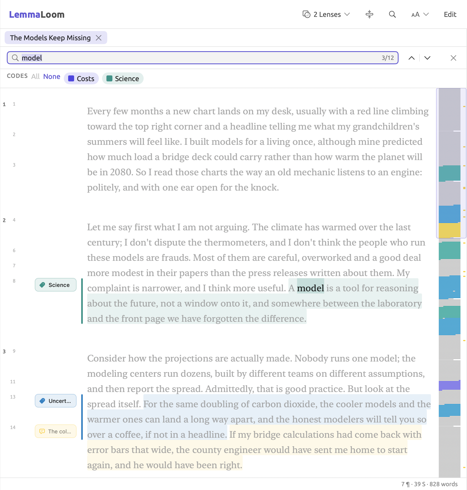
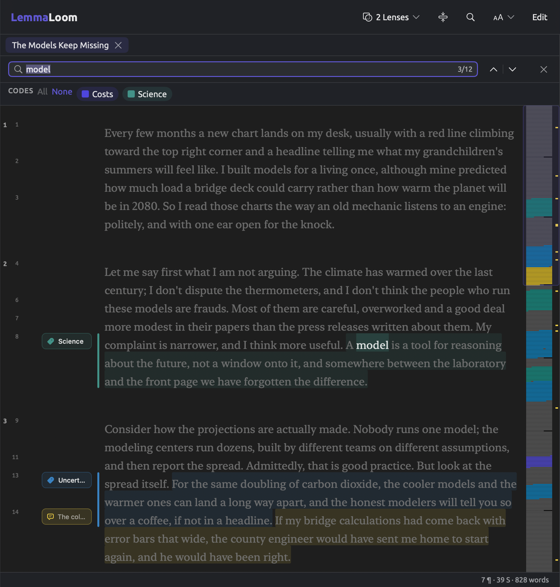
To search for text in a document:
- Choose Edit ▸ Find (⌘F), or click Find in document (the magnifying glass) in the title band. The search bar opens above the text, with the cursor in its search field.
- Type what you are looking for. LemmaLoom searches as you type and scrolls to the first match.
- Press Return or ⌘G, or click the down arrow, to go to the next match. Press ⇧⌘G, or click the up arrow, to go back to the previous one. After the last match the search starts again at the first, and from the first match ⇧⌘G goes to the last.
- To close the search bar, press Esc, click the × at its right end, or choose Edit ▸ Find (⌘F) again.
In the search field above, the counter shows you which match number you are currently on along with the total number of matches, so 3/12 indicates that this is the third of twelve total matches. Should there be no matching results, Not found is displayed.
The reader will highlight the current matching passage in your text automatically, and depending on the settings of Surrounding Text (Fade or Light fade), everything surrounding the match becomes dimmer, whereas Highlight sentence or Off means your matches get tinted. All matches show up as ticks on the right edge of the document overview of the reader.
Matching works as follows:
- Capitals and accents are ignored, so
modelwill match Model andcafewill match café; - Spaces before and after your input are ignored;
- Matches can lie inside longer words, so
modelwill match models or modelers as well. To find a phrase as a whole, type it with its spaces, for example,error bars; - Chinese text is searched the same way, as a run of characters.
Every document gets a separate search bar in LemmaLoom; closing it resets your search. If your reader is collapsed into the annotated sentences of a document, then opening the search bar expands the reader and gives you access to the whole document body. Collapsing the reader will automatically close the search bar again. When editing documents, Find is disabled.
Selecting text
In the LemmaLoom reader, you can code passages in your text, bookmark passages, attach memos to passages, link passages, and/or add passages to a dictionary, once you select them. Passages can consist of a word or a longer stretch of text.
Selecting a word
Choose a word by clicking on it. Clicking the same word again, or pressing Esc, removes the current selection. Selection works on individual words when the document has already been indexed.
Selecting a word also shows how the word connects to the rest of its sentence. By default, connections in the form of arcs show how the selected word is connected to its head and its dependents. Additionally, everything around the selected word’s sentence is faded out. If the inspector is currently visible, then the Grammar tab within it provides details about the selected word (see Chapter 11, The Grammar Inspector). How the selection looks and how its connections are shown can be configured from Settings (refer to How selections are displayed above).
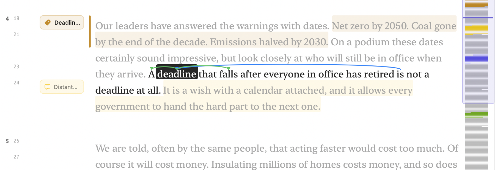
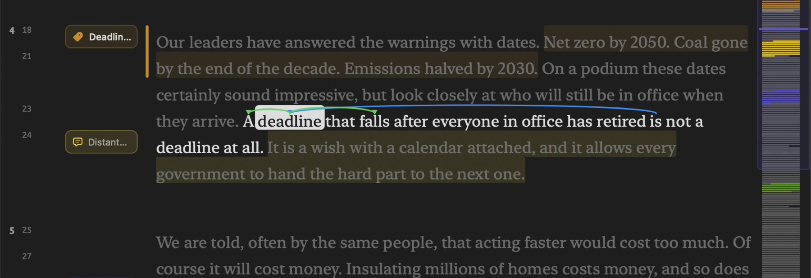
Selecting a passage
Select your passage by clicking the beginning of the passage and dragging to its end. Spaces at either end are left out. Alternatively, you can click the numbering in the gutter next to paragraphs or sentences to select them directly, as well as annotations or bars in the margin to select passages.
How much to select depends on your needs. However, it is recommended to select enough passage text for the selection to be self-contained, as passages are read separately outside of context once coded. In “Climate Debate”, the majority of selections coded were made from one or two complete sentences.
Copying the passage text is done using Edit ▸ Copy (⌘C).
The selection bar
The instant any word or passage has been selected in the document, a bar appears near the bottom of the reader. The bar starts by displaying the first words of your selection and the actions that can be performed on it.
The figure shows a sentence selected from “Running Out of Time”, which is ready for coding under “Deadlines” as in the Quick Start. The previous passage was already coded with “Deadlines”. Next to the following sentence, there is an annotation attached to a memo beginning with “Distant targets are read as evasion”.
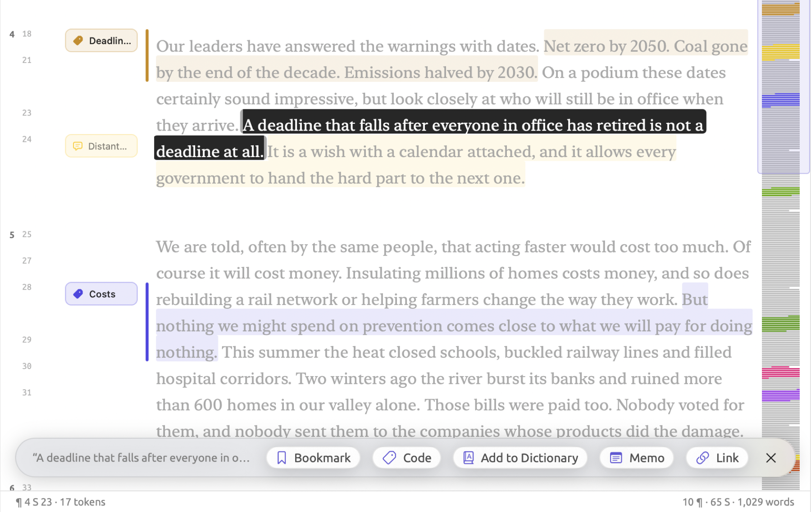
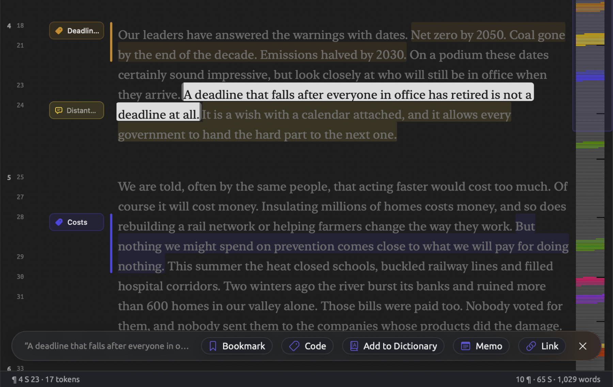
The selection bar includes the following features:
- Bookmark creates a bookmark in the current passage, optionally accompanied by a comment such as “Rhetorical question at the turn to the closing appeal” on a bookmark in “Running Out of Time”. When a selection lies atop a bookmark, however, the button switches to Remove Bookmark.
- Code opens the code palette. Select one to code the passage, type into the box to look up the code from the list (the highlighted code, the first match until you move with ↑ and ↓, is applied when pressing Return), and pick a code with a checkmark (one already on the passage) to remove it. After all the codes in the list, the option Add Code “…” creates a new code whose name matches what was typed, assuming there’s no code with such a name already. Finally, there’s the In Vivo “…” option for coding the selection with a new code named after the selected text.
- Add to Dictionary will insert the selected text into a category of a project dictionary (see Chapter 19, Dictionaries). This button will only appear if the project contains at least one dictionary.
- Memo creates a memo related to the selected passage.
- Link initiates creation of a link between two passages. The second passage, in this document or another, must be selected before clicking Finish Link. In the meanwhile, you get a crossed-out link button, Cancel the pending link, which deletes the unfinished link.
- Clicking × at the end of the selection bar clears the current selection, like Esc.
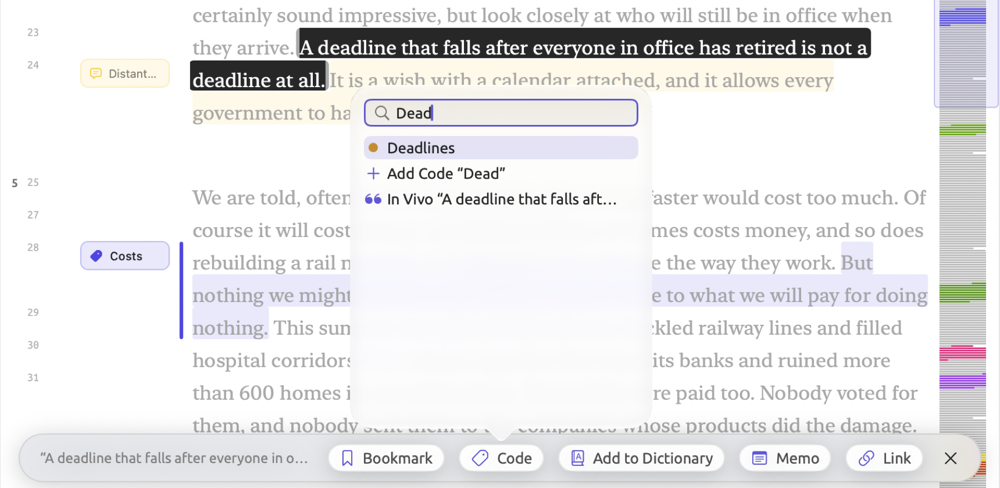
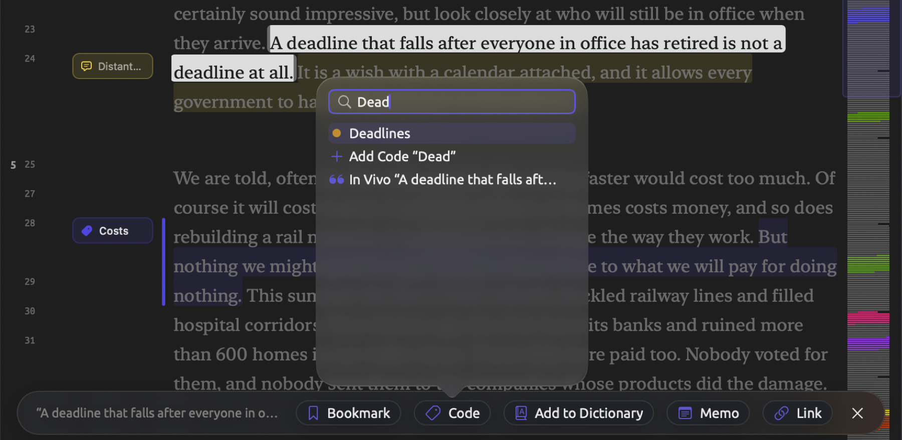


For information regarding appropriate use of coding, memos, bookmarks, or linking, see Chapter 7, Coding.
The Document menu contains commands for performing these actions with their respective keyboard shortcuts:
| Command | Shortcut |
|---|---|
| Document ▸ Code | ⇧⌘C |
| Document ▸ In Vivo Code | ⇧⌘V |
| Document ▸ Memo | ⇧⌘M |
| Document ▸ Bookmark (or Remove Bookmark) | ⇧⌘B |
| Document ▸ Link (or Finish Link) | ⇧⌘L |
| Document ▸ Cancel Link | ⌥⇧⌘L |
Editing a document’s text
All document texts may be edited. Editing in LemmaLoom allows you to correct minor errors, including typos in an article, errors introduced during PDF text extraction, incorrectly transcribed words in a transcription, poorly translated phrases in a machine translation, etc. When you edit, LemmaLoom keeps any codings, memos, links, and bookmarks associated with their respective text fragments. Once saved, the whole document gets indexed anew.
The editor presents the text of your document as plain text in a monospaced font. To edit significant portions of the text, first edit it somewhere else and paste it back into the editor. Alternatively, import the modified document file and begin coding anew. After pasting, be sure to review any annotations, which could now refer to incorrect text (see the note at the end of How annotations follow edits below).
Editing and saving
The kinds of texts you would want to edit the most are probably those generated by LemmaLoom, either a transcription, a translated text, or a PDF’s text extracted by LemmaLoom. In “Climate Debate”, these are “Heat Wave Report 2024”, the transcript of “Radio Debate”, and “Running Out of Time (German)”. Below is an image showing one of the skeptic opinion pieces, “Net Zero Will Cost You”, in the editor, with blank lines separating its paragraphs and no options except for the Cancel and Save buttons in the title band.
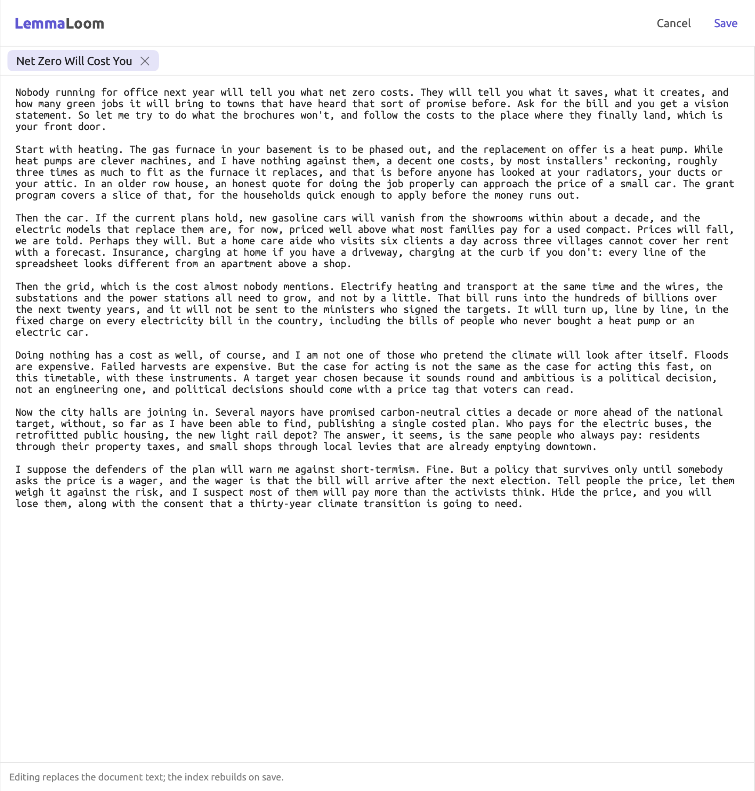
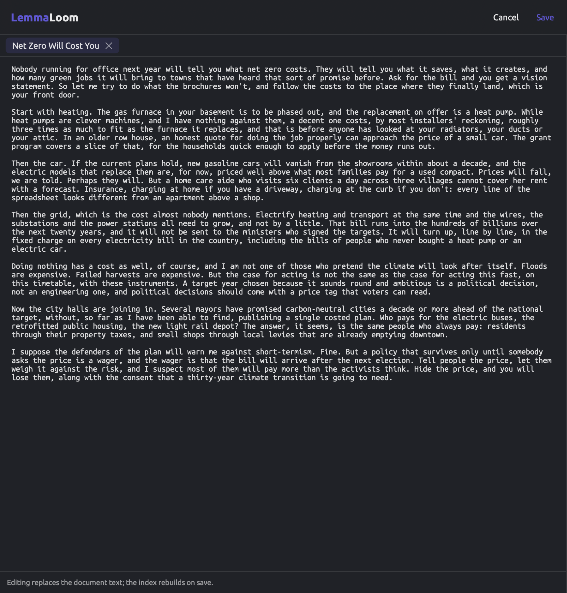
To modify a document’s text:
- Open the document.
- Click Edit at the right end of the title band, or choose Document ▸ Edit (⇧⌘E). The reader becomes a plain text editor with a monospaced font. Lenses, the gutter, the document overview, and the status bar are hidden while you edit, and the line Editing replaces the document text; the index rebuilds on save. appears below the text.
- Make your changes. While you type, ⌘Z undoes your last changes in the editor.
- Click Save in the title band, or choose Document ▸ Save (⌘Return).
Separate paragraphs with a blank line. In the absence of blank lines, a document has one paragraph per line. Once you introduce even a single blank line, only blank lines separate paragraphs; hence, the number of paragraphs decreases drastically.
Clicking Cancel, or choosing Document ▸ Cancel (⌘.), will take you out of the editor while losing your current changes; any input you entered since clicking Edit will vanish immediately.
Should the reader have been collapsed to only the annotated sentences, clicking Edit opens up the complete document first.
Other actions within a project (coding passages and writing memos, for instance) are automatically saved as you perform them; changes in text are saved only via Save. So long as the editor is open, switching tabs keeps your edits. However, switching to a different project or quitting LemmaLoom without having saved your edits results in losing them permanently.
What saving does
After you save an edited text, LemmaLoom:
- replaces the document’s text with yours;
- moves the codings, memos, bookmarks, and links in the document so that they stay with their text (see How annotations follow edits below);
- indexes the document again from the beginning.
During indexing, the reader displays the newly modified text underneath the label Saving. Your title band will display Saving in place of Edit as well. Once indexing completes, your lenses, word counts, and inspector will update according to the new text. For documents in a language where LemmaLoom does not conduct grammar analyses, the reader is ready again immediately.
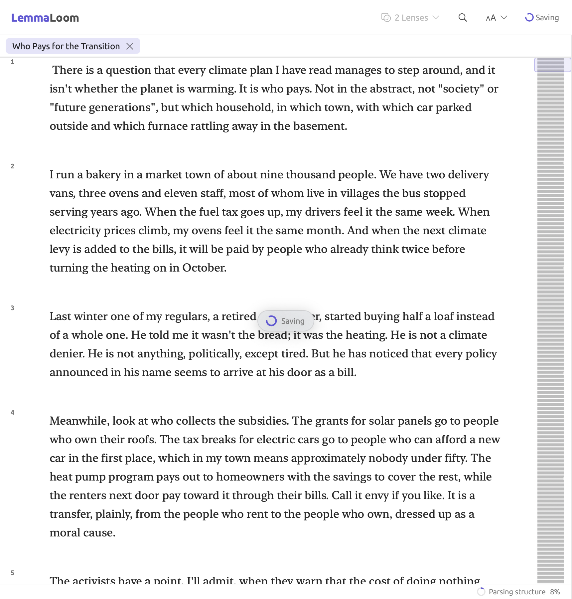
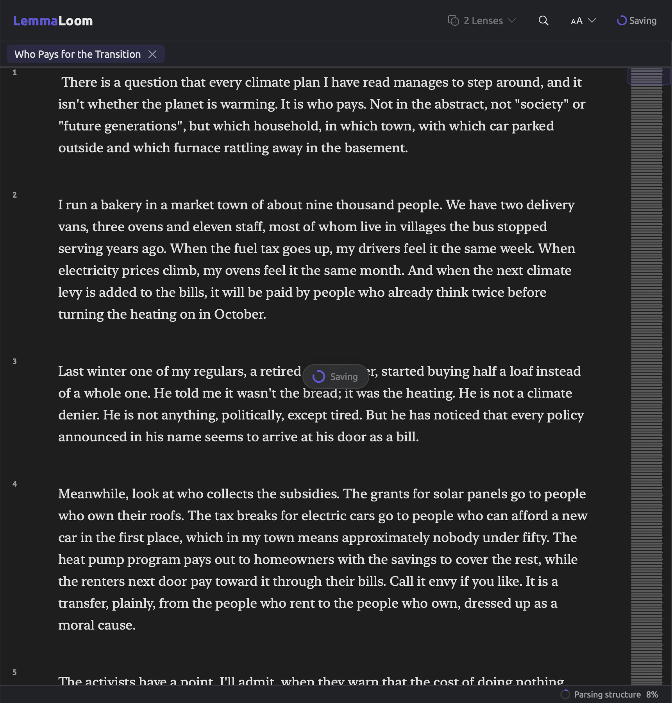
The time required to index modified documents is about equal to the time needed to initially index them. You can track the progress using the status bar, or the Window ▸ Activity menu item (⌥⌘0). Should indexing be disabled for a particular document, LemmaLoom will re-index it only once you click Index Now in the status bar, and until then the reader keeps showing Saving.
How annotations follow edits
When you save changes made to a document, LemmaLoom analyzes differences between versions by comparing letters in the previous and updated text in order to figure out what additions and deletions were made. Then, it shifts all associated items, including codings, memos attached to a passage, bookmarks, links, transcripts-to-audio/video associations (see Correcting a transcript later in this chapter), and alignments of originals and translations, to correspond with updated locations. Scroll Together and the placing of new copies of annotations rely on that alignment (see Annotations in both languages in Chapter 9, Translations and Split View).
When you make an edit, it applies only to the language version, original or translation, that you perform edits in; annotations in the other language version remain unchanged. If you know ahead of time that you intend to translate a document, consider fixing any errors in it beforehand to avoid translating errors from it into another language.
Additions or deletions made earlier in the document will shift the passage along with its text. Additions made within a passage will become included in it. Additions made immediately after a passage will fall outside it (unless they end with the same character as the last character of the passage, in which case they become part of it). Deletions within a passage will shorten it. Additions made immediately before a passage will stay outside it. Text that replaces a passage will become the new passage. Deleting all of a passage’s text will leave the annotation intact, with an empty passage.
An example
The speech titled “A Mayor’s Promise” has the following passage:
We will plant twelve thousand trees, starting in the neighborhoods that need them most.
Suppose that twelve thousand trees is coded with “Hope”. The table shows what changes happen to the coded passage after making each one of these edits, one at a time, to the original sentence:
| Edit | Coded passage afterwards |
|---|---|
| We will plant changed to The city will plant | twelve thousand trees, moved with its text |
| twelve thousand changed to 12,000 | 12,000 trees |
| street added between thousand and trees | twelve thousand street trees |
| around added before twelve | twelve thousand trees; around stays outside |
| by 2035 added after trees | twelve thousand trees; the addition stays outside |
| along our streets added after trees | twelve thousand trees along our streets |
| twelve thousand trees replaced by a grove | a grove |
| twelve thousand trees deleted | an empty passage |
Since the addition by 2035 ends in 5 whereas trees ends in s, LemmaLoom places the addition after the passage. Since the addition along our streets also ends in s (like trees), however, LemmaLoom considers it as occurring inside the passage; the new text could equally be the letters s along our street inserted inside the passage, before its last letter.
If you delete the text of a coding, as in the last row, that coding can be found only in the Codings view of the project shelf, where you may right-click the coding and select Delete Coding. Memos and bookmarks whose text you delete are kept in the same way. To avoid empty annotations, remove them before deleting their text.
Once editing close to a coding occurs, check in the reader whether the coding still covers the right part of the modified passage. If it needs modification, remove the coding from the passage, and then re-code it (see Removing a code from a passage in Chapter 7, Coding).
Undoing an edit
Saving an edit results in one entry in the undo history (see Chapter 23, Undo and Redo). To restore the previous state of the edited text, along with all of its codings, memos, bookmarks, and links to their previous positions, choose Edit ▸ Undo Edit Text (⌘Z). This will reindex your document accordingly.
Audio and video documents
When working with an audio or video document like “Radio Debate”, you work with the transcript in exactly the same way as you would with any text document. Once you import the recording, LemmaLoom generates the transcript for you (see Chapter 4, Importing Material). Each stretch of the transcript is tied to the stretch of the recording it came from. Paragraphs begin at points where the speaker shifts or there is a pause in speaking longer than roughly a second and a half.
You will code the recording using its transcript. Whenever there are passages whose meanings cannot be determined based purely on the transcript, e.g., if it was the speaker’s intonation or sarcasm that made something meaningful, you can listen to them directly.
The speakers and text remain separate in LemmaLoom. If a recording contains multiple speakers, they will be indicated in the player bar as you listen along. The names of the speakers will follow a naming convention of “Speaker 1”, “Speaker 2”, etc. for LemmaLoom-transcribed recordings; in “Radio Debate”, they will be labeled “Host”, “Activist”, and “Skeptic”. Each speaker’s utterances are automatically coded with a subcode of the code “Speakers”. The names on the player bar retain their original values when you rename your speaker codes (see Speakers in Chapter 4, Importing Material).
The player bar
Above the text lies the player bar. The contents of this bar, from left to right, are shown below:
- For video only, buttons to collapse the video player down to the controls (Collapse to the controls) or show it again (Show the video), and to move the video beside the text or back above it;
- Play or Pause control button;
- Scroll with audio control button, which makes the reader follow the recording;
- Elapsed playtime, a playback slider control, and total recording length;
- Speaker of the current passage for any recording with multiple speakers, e.g. “Skeptic”.
The timings on both the elapsed playtime counter and total length counter are displayed in minutes and seconds form, such as 2:14. Any recordings of an hour or more have hours displayed along with minutes and seconds, such as 3:56:32.
In the illustration below is the recording “Radio Debate”. This particular recording is roughly five minutes long, currently paused at 1:09, during a speech made by the Skeptic. As Scroll with audio is on, the current passage is highlighted while the remainder of the text is grayed out. The speaker codes appear in the gutter beside each turn.
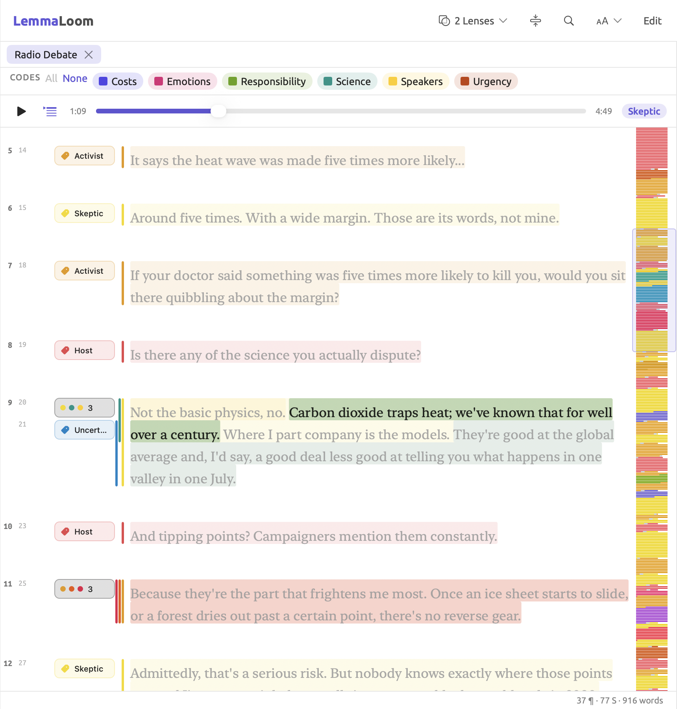
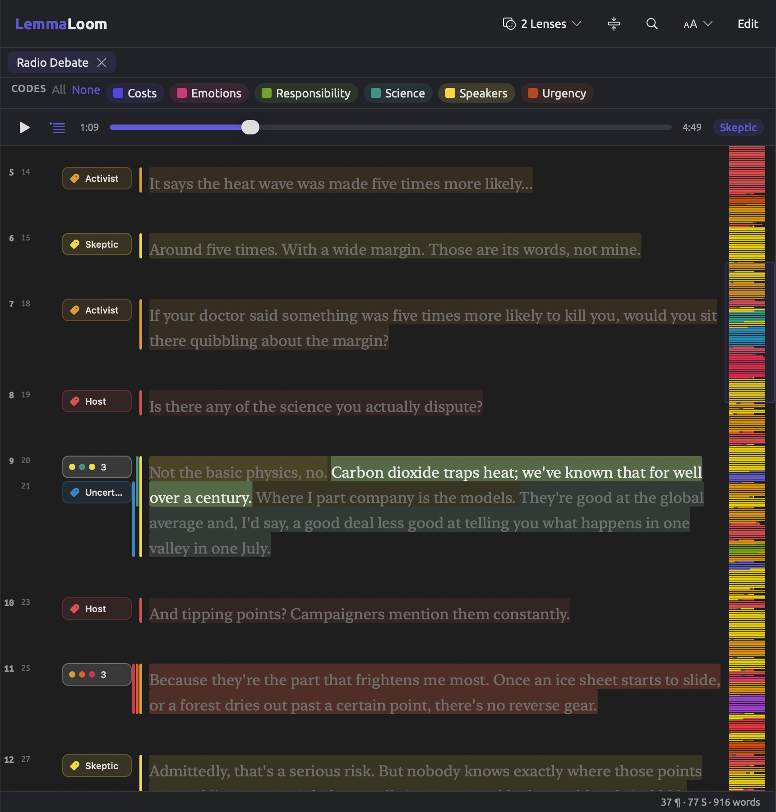
To play a recording:
- Open the document.
- Click Play (the triangle), or choose Document ▸ Play (⇧⌘P).
- To stop, click Pause or choose Document ▸ Pause (⇧⌘P).
- To move to another point, drag the slider.
When pressing Play at the end of a recording, playback will begin anew from the starting point. If you switch tabs or close the document during playback, playback pauses immediately.
Playing from a point in the transcript
Clicking a word in the transcript moves the player to the start of the passage it belongs to. It does nothing more than move the playhead; hit Play to hear from this point onward. Only if the document is indexed can you navigate by clicking on words (see Before indexing has finished earlier in this chapter). If a document uses a language lacking grammar analysis, use the slider instead.
When checking an uncertain passage, click on a word inside it, then hit ⇧⌘P. This lets you listen, and then pressing ⇧⌘P pauses the playback.
Following the transcript
With Scroll with audio turned on (the button is highlighted), the reader will highlight the passage playing and will keep it centered within the pane as the recording progresses. Dragging the slider will drag the highlighted passage along with it. When turned on, Scroll with audio immediately jumps to wherever the recording currently plays. Initially, Scroll with audio is set to off; like the size and position of videos, it applies to every audio and video document.
If you scroll, click, or navigate with the keyboard during playback, the reader stops following for a few seconds and scrolls back once the next passage in the recording begins. With a passage selected, the reader holds its position. Clicking Play jumps instantly back to the passage being played.
Scroll with audio is especially helpful when coding a recording while listening, or checking the transcripts against the recording. Pause playback with ⇧⌘P when you come across an interesting passage to code, and the reader stays on that passage while you select and code it.
Within the Reader pane of Settings, Audio Playback determines how the currently playing passage should be displayed. Spotlight dims everything else except the currently played passage. Solid block places the currently played passage on a block of color. Lastly, Highlight highlights the currently played passage slightly.
Video above or beside the text
A video is played within a frame above the text area. You may drag the divider beneath the video frame up to increase the space available to the text area. Alternatively, clicking Collapse to the controls will collapse the video and leave behind only the player bar.
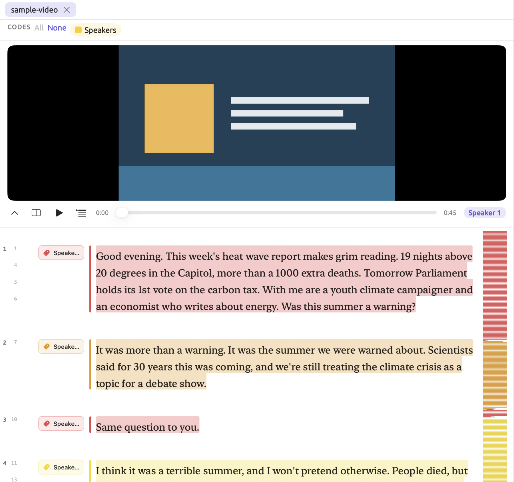
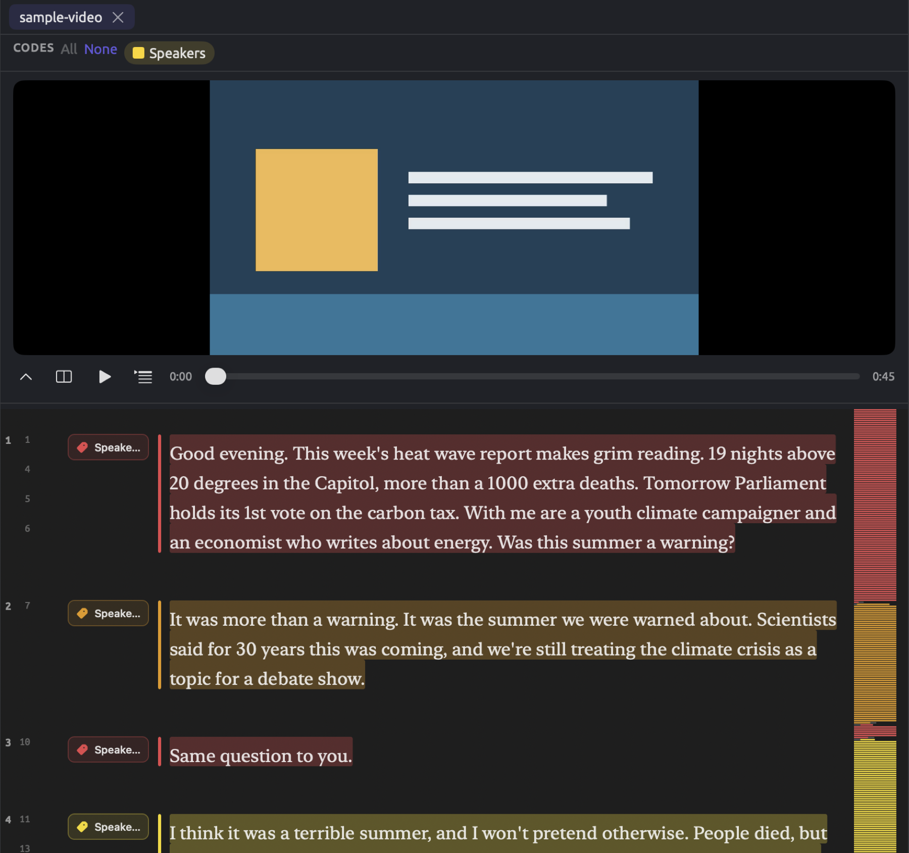
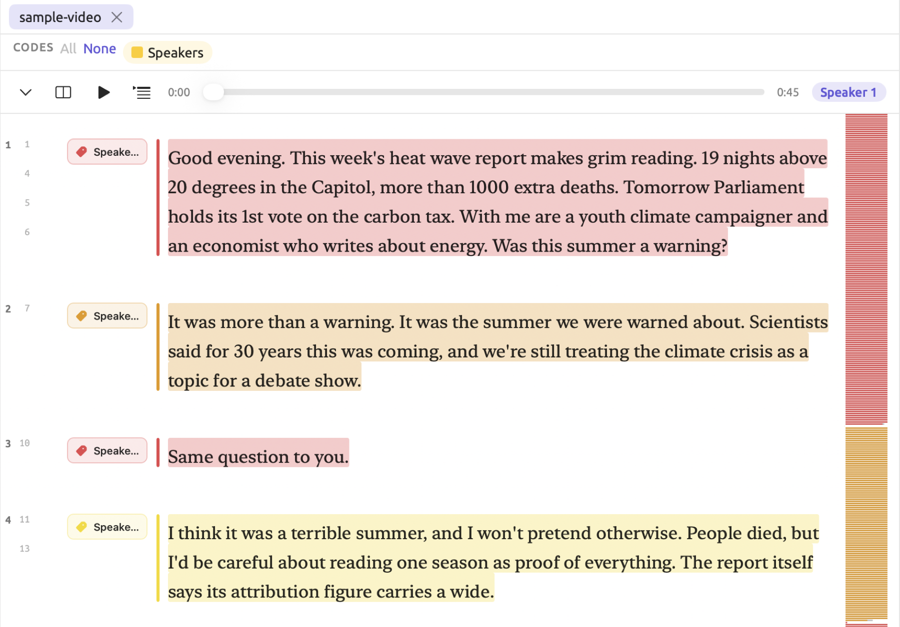
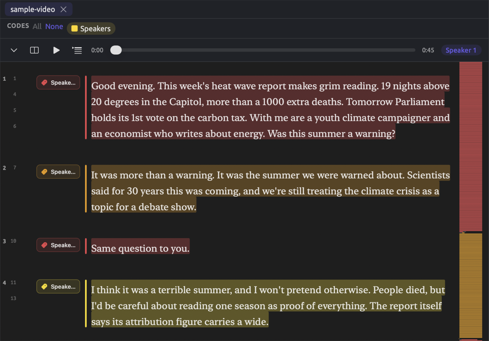
Clicking the Show the video beside the text button will place the video to the left of the text area, with the player bar beneath the video. Adjusting the divider between them will resize both areas accordingly, while the text keeps a readable width. Click the Show the video above the text button to restore the original configuration. With wider screen sizes, having the video displayed beside the text increases visible lines in the transcript.
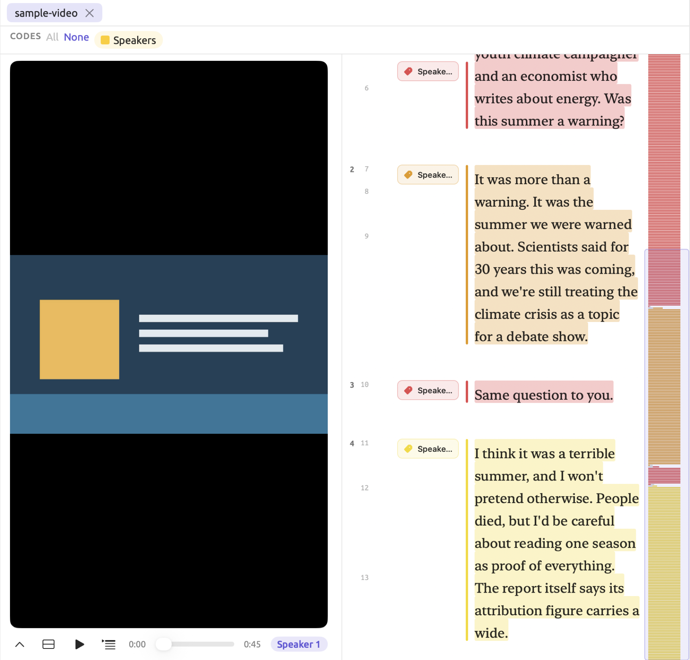
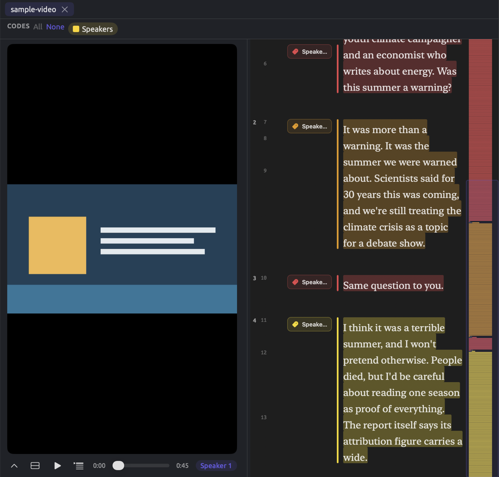
Correcting a transcript
Transcripts will inevitably contain some errors, especially in names and domain-specific vocabulary. Correcting transcripts works the same as any other text editing (refer to Editing and saving earlier in this chapter). Your player bar stays put throughout editing, and playback can still be toggled with ⇧⌘P while editing your transcript.
It makes most sense to find errors in your transcription first, and then address them. Use the reader’s playback functionality while having Scroll with audio enabled to locate the passages requiring corrections (you can use bookmarks for this purpose). Proceeding to the editor, you then fix the errors accordingly. Ideally, you should correct the transcript prior to coding.
The ties established between the transcript and the corresponding recordings follow your edits similarly to how codings do (refer to How annotations follow edits earlier in this chapter). This means that a corrected word within a passage continues playing as a part of the passage, and clicking it takes you to the same place in the recording as before your changes.
The full-screen reader
When LemmaLoom is running in full screen mode, the whole window takes the entire screen. The title band hides, and the tools go to the toolbar at the very top of the screen. Full screen mode proves particularly helpful for initial readings of large documents. It’s possible to keep the inspector open while you work on coding documents, for example, to keep the document’s codes in view in its Coding tab.
The figure below demonstrates how “Running Out of Time” looks when displayed in full screen, where both the sidebar and inspector remain open alongside the open Reader Settings menu in the toolbar.
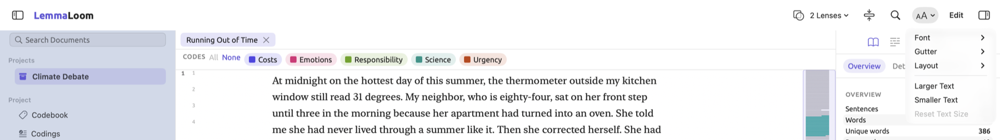
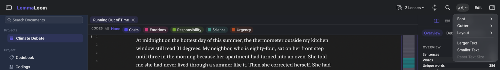
How to read in full-screen mode:
- Open the document.
- Choose View ▸ Enter Full Screen (⌃⌘F), or click the green button at the top left of the window.
- To give the text the whole width of the screen, hide the sidebar with View ▸ Toggle Sidebar (⌃⌘S) and the inspector with View ▸ Toggle Inspector (⌃⌘I).
- To leave full screen, choose View ▸ Exit Full Screen (⌃⌘F).
All menu commands and shortcuts in this chapter function identically within full-screen mode.
Reading two documents side by side
Split view splits your reader into two panes with each displaying one document. Split view lets you juxtapose two documents, say an op-ed written by activists on a topic and another one written by skeptics on the same issue, or an article next to its own translation. It is also helpful when you are in the middle of coding. Having already coded a document in one pane, you can see the exact nature of how you coded something, and now you can continue applying the code consistently on the document you are currently coding. More information on how to use translations along with split views can be found in Chapter 9, Translations and Split View.
The figure illustrates the op-ed titled “Running Out of Time” on the left, followed by its German translation titled “Running Out of Time (German)” on the right. The translated document contains copies of the codings made to the original document, and Scroll together keeps the two aligned as you scroll.
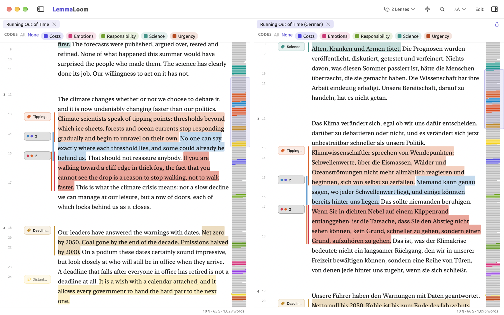
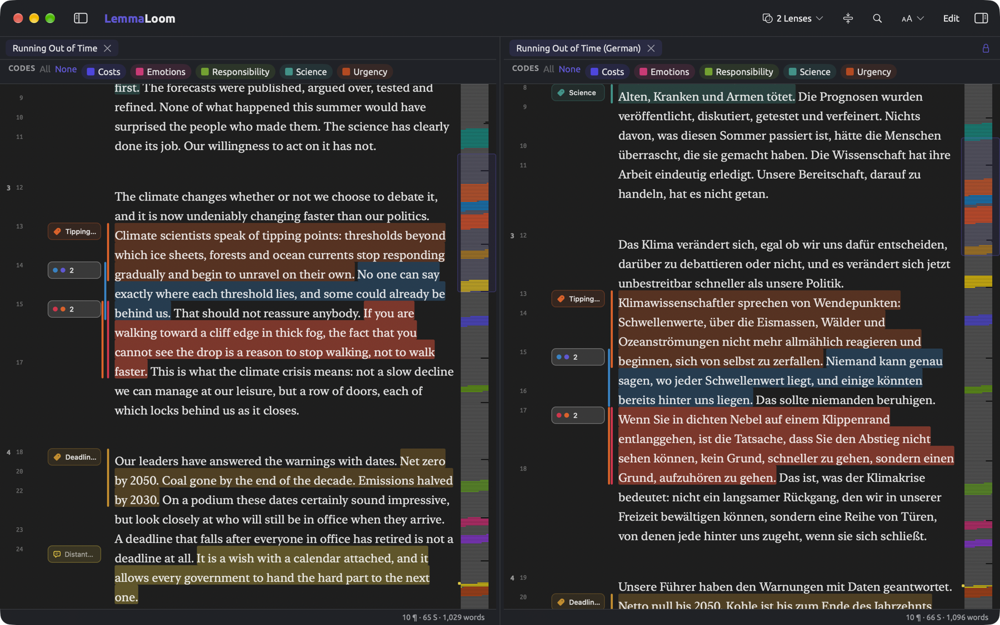
There are several ways to open a second document beside the current one.
- In the sidebar, right-click the document and choose Open in Split View from the shortcut menu.
- Alternatively, right-click the tab of another open document and choose Open in Split View from its menu.
- For opening two documents side by side simultaneously, hold down ⌘ while clicking the second document in the sidebar, right-click one, and choose Open Side by Side from the shortcut menu. Whichever document is positioned higher in the sidebar opens on the left.
- In the case of a translation, right-click it in the sidebar and choose Open Beside Original. The original will open on the left and the translation on the right.
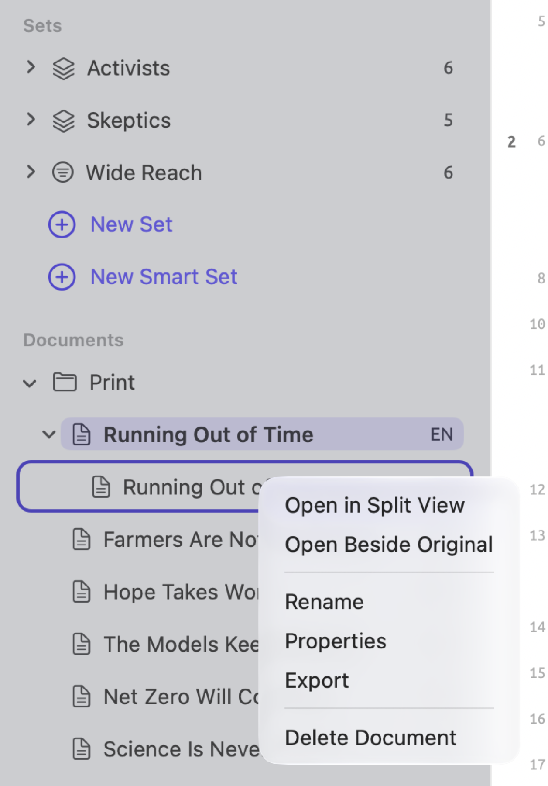
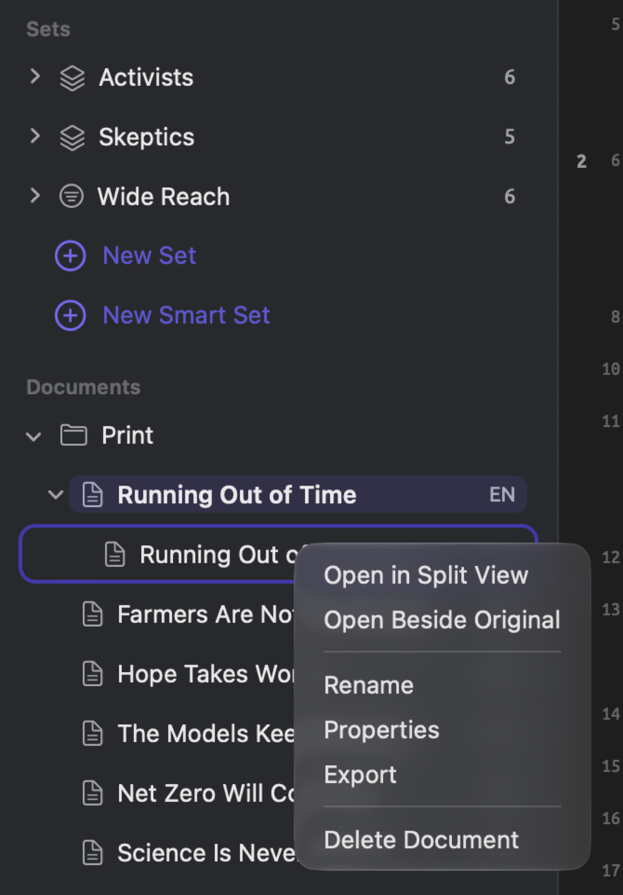
All mentioned options can also be found under Window in the main menu. From there, Open in Split View lists the open documents available to go beside the active document.
The newly opened document opens in the right pane. Its tab gets moved out of the tab strip onto the header of the right pane.
Split view functions in the following manner.
- By clicking either pane, you activate it, which highlights its tab. Tools, menus, and the inspector now pertain only to the activated pane; thus, ⌘F will look through the document inside that pane only.
- By dragging the divider between the two panes, you control their respective sizes. There are minimum size limits for the panes, and LemmaLoom remembers the division and restores it accordingly upon reopening split view.
- Every pane contains its own set of lenses and search bar as well as independent selections and scrolling positions. This allows you, for instance, to enable a grammar lens in one pane, leaving only your codes in the other. Fonts, text size, gutter, and layouts are synchronized between both panes.
- If the two documents correspond to each other as an original and translation or even two translations from an identical original, a lock button, Scroll together, appears on the far right of the header of the right pane. Click that to synchronize scrolling, or alternatively choose View ▸ Scroll Together (⌥⌘L).
To close split view, click the × on the right pane header, choose Close Split View from that header’s shortcut menu, or select Window ▸ Close Split View from the main menu. The document in the right pane closes with it.
Opening a document in its own window
Alternatively, you could read your document within its own window. This might be useful if you had another monitor to work with or if you wish to have a text visible while the main window shows something else, perhaps the codebook or a query. To open your document in a separate window, right-click on the tab for that document and select Open in New Window. You could also choose Window ▸ Open in New Window for your current active document. The Document window displays the reader alongside an inspector of its own. LemmaLoom has only one such window, so opening another document in a new window replaces the one it shows.
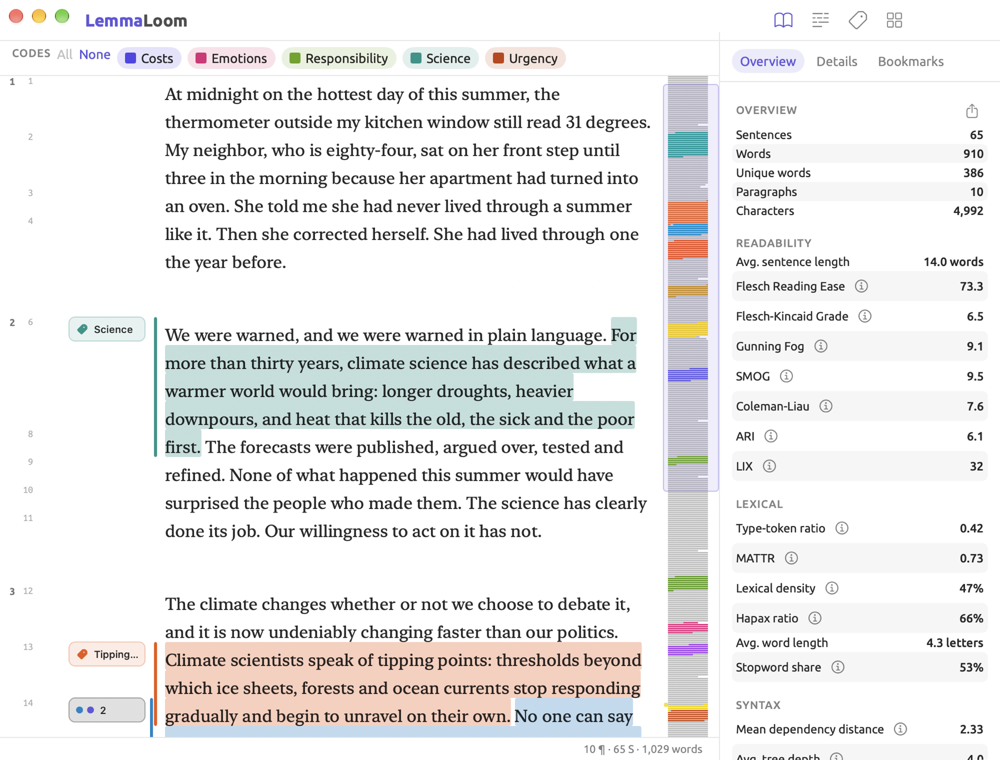
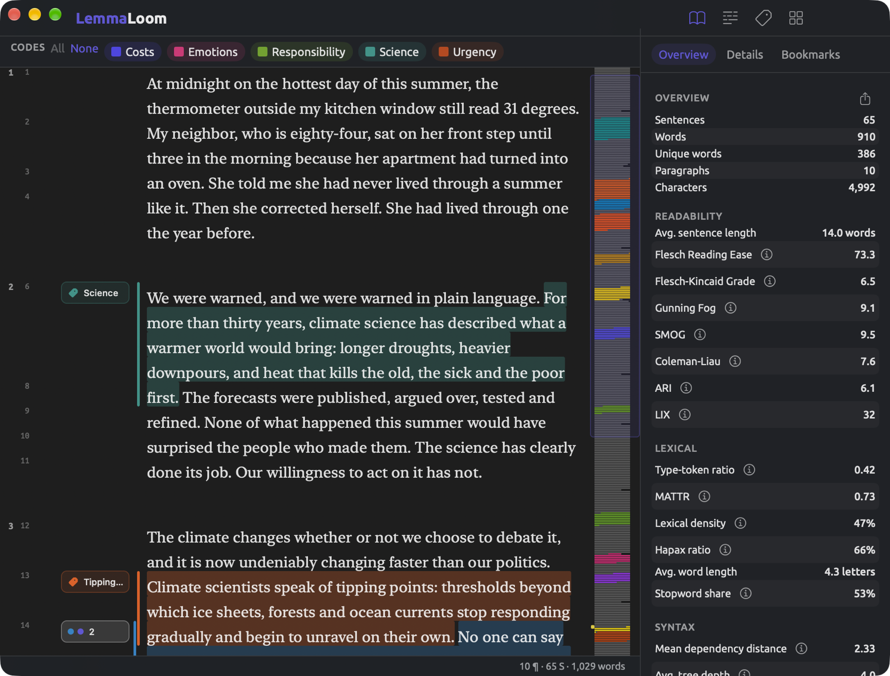
From here, you may use the available menu commands and their respective shortcuts, for example, searching for text with ⌘F, resizing text with ⌘+ and ⌘-, editing the document with ⇧⌘E, revealing/hiding the inspector with ⌃⌘I, completing editing with ⌘Return, or using ⌘. to cancel it.
Commands for reading and editing
| Command | Shortcut | Notes |
|---|---|---|
| Edit ▸ Find | ⌘F | Opens or closes the search bar. Disabled while editing. |
| Edit ▸ Find Next | ⌘G | While the search bar has matches. |
| Edit ▸ Find Previous | ⇧⌘G | While the search bar has matches. |
| View ▸ Larger Text | ⌘+ | With a document open, up to 200 percent. |
| View ▸ Smaller Text | ⌘- | With a document open, down to 70 percent. |
| View ▸ Reset Text Size | ⌘0 | With a document open, when the size is not 100 percent. |
| View ▸ Scroll Together | ⌥⌘L | In split view, with two language versions of one document. |
| View ▸ Toggle Sidebar | ⌃⌘S | Shows or hides the navigation sidebar. |
| View ▸ Toggle Inspector | ⌃⌘I | Shows or hides the inspector. |
| View ▸ Enter Full Screen | ⌃⌘F | Reads Exit Full Screen while in full screen. |
| Document ▸ Edit | ⇧⌘E | When the document’s text has loaded. |
| Document ▸ Save | ⌘Return | While editing. |
| Document ▸ Cancel | ⌘. | While editing. |
| Document ▸ Play or Pause | ⇧⌘P | In audio and video documents. |
| Edit ▸ Undo Edit Text | ⌘Z | After saving an edit. |
See the list of all keyboard shortcuts in LemmaLoom in Chapter 25, Keyboard Shortcuts.